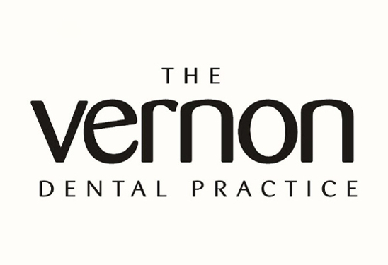
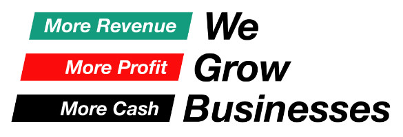

Mercedes-Benz of Stevenage is a premier dealership located on Gunnels Wood Road, Stevenage SG1 2BT. As part of the L&L Automotive group, the dealership offers a wide range of new and used Mercedes-Benz vehicles, catering to the needs of customers in Stevenage and surrounding areas such as Hitchin, Knebworth, and Letchworth.
The dealership prides itself on providing exceptional customer service, backed by highly skilled Mercedes-Benz trained technicians. Every Approved Used car comes with a minimum of 12 months' unlimited mileage warranty, including 12 months' roadside assistance and MOT test failure cover.
Additionally, the dealership offers multi-point vehicle preparation checks, vehicle history checks, and mileage verification checks to ensure the highest quality standards.With a commitment to technical expertise, customer care, and outstanding value, Mercedes-Benz of Stevenage aims to deliver a seamless purchase experience, whether through online channels or in-person visits to the showroom. The dealership also provides comprehensive aftersales services, including servicing, repairs, and genuine parts.
Vernon Dental Practice is a dental practice in the heart of Hitchin. It provides a high standard of dental care for all.
We Grow Buisness is, quite simply, a comapany set up to help small businesses grow. They work with the owners of small businesses and help them to increase customers, delivery more work and make more profit.
The money that we gain from sponsorship will go towards quite a lot of things. First and foremost, it will go towards buying materials to produce our car. We will also buy merhcnaidse, such as customised t-shirts and hats. We also need to buy high-quality printed pieces for our pit wall display.